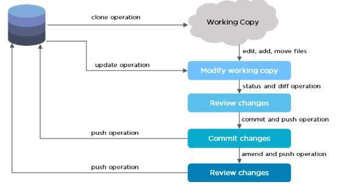
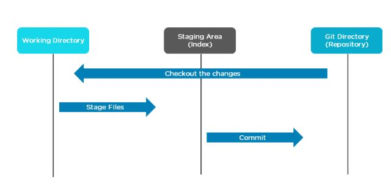

Welcome to Gitlab-Sesyn documentation¶
What is Git?¶
Git is a version control system used for tracking changes in computer files. It is generally used for source code management in software development. - Git is used to tracking changes in the source code - The distributed version control tool is used for source code management - It allows multiple developers to work together - It supports non-linear development through its thousands of parallel branches
GitLab is built on top of git to provide better adminstration and advanced tools.
Version control, also known as source control, is the practice of tracking and managing changes to software code. Version control systems are software tools that help software teams manage changes to source code over time. As development environments have accelerated, version control systems help software teams work faster and smarter. They are especially useful for DevOps teams since they help them to reduce development time and increase successful deployments.
Version control software keeps track of every modification to the code in a special kind of database. If a mistake is made, developers can turn back the clock and compare earlier versions of the code to help fix the mistake while minimizing disruption to all team members.
Features¶
Tracks history
Free and open source
Supports non-linear development
Creates backups
Scalable
Supports collaboration
Branching is easier
Distributed development
Gitlab/Git Workflow¶
 Gitlab/Git Branches¶
Branch in Git is used to keep your changes until they are ready. You can do your work on a branch while the main branch (master) remains stable. After you are done with your work, you can merge it with the main office.